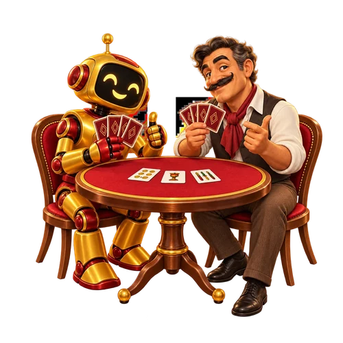
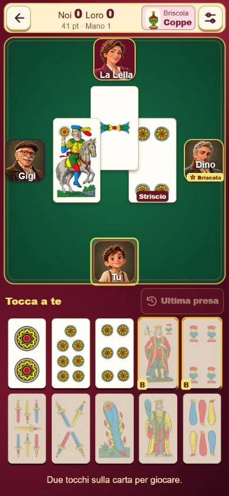

IL TUO RITMO01

Tu, le carte e la CPU.
Prendi confidenza o alza il livello della sfida. Quattro difficoltà, da Facile a Esperto, per trovare la partita che fa per te.
Si gioca anche offlineQUELLA VOGLIA DI UN’ALTRA MANO
Il piacere di una partita fatta bene.
Le carte di casa, la sfida, gli amici: tutto al tuo tavolo, anche su Android.
IL TUO POSTO È AL TAVOLO

01 / IL GIOCO
Ci sono partite che sanno di casa. Una briscola scelta al momento giusto, l’intesa con il compagno, quella presa che ribalta la mano.
Beccacino porta su Android il gioco di carte romagnolo: quattro giocatori, due coppie e le quaranta carte della tradizione. Per ritrovare il gusto della sfida e il piacere di giocare insieme.
02 / A CIASCUNO LA SUA PARTITA
Una mano per allenarti.
Una sfida da condividere.
Scegli come metterti in gioco.

Prendi confidenza o alza il livello della sfida. Quattro difficoltà, da Facile a Esperto, per trovare la partita che fa per te.
Si gioca anche offlineRitrova il piacere della partita in quattro. Il multiplayer online porta altri giocatori dall’altra parte del tavolo.
Multiplayer onlineCrea una partita, invita gli amici o cerca un tavolo pubblico. Scegli la compagnia e lascia parlare le carte.
Tavoli pubblici e privatiLe funzioni online richiedono un account e una connessione. Le modalità mostrate fanno parte della Beta in preparazione.
04 / UNO SGUARDO DA VICINO
Schermate reali della Beta.
Tocca un’immagine per guardarla da vicino.
ANDROID / IN PREPARAZIONE
Stiamo preparando Beccacino per Android e Google Play. Una Beta gratuita, pensata per chi ha almeno 16 anni, con distribuzione iniziale in Italia.
Il download pubblico non è ancora disponibile.
Quando sarà il momento, ci ritroveremo qui.